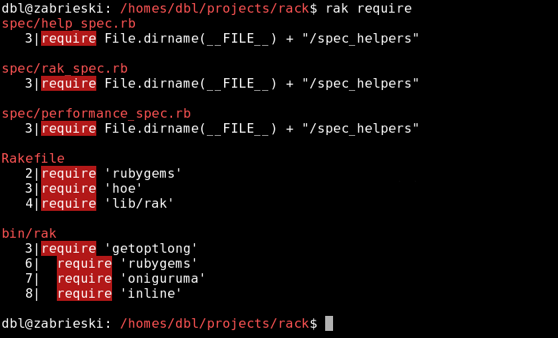
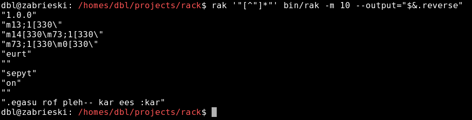

gem install rak
Searching for require in the rak source tree:

Finding the first 10 strings in the bin/rak file:

Taking those strings and reversing them with Ruby:

Rak is a grep replacement in pure Ruby. It accepts Ruby syntax regular expressions and automatically recurses directories, skipping .svn/, .cvs/, pkg/ and more things you don't care about. It is based on the Perl tool ack by Andy Lester.
gem install rak
Or clone from the git repo:
git clone git://github.com/danlucraft/rak.git
To get coloured output on Windows install the win32console gem.
Please email comments and patches to dan@fluentradical.com.
Searching for require in the rak source tree:
Finding the first 10 strings in the bin/rak file:
Taking those strings and reversing them with Ruby:
Usage: rak [OPTION]... PATTERN [FILES]
Search for PATTERN in each source file in the tree from cwd on down.
If [FILES] is specified, then only those files/directories are checked. rak will search STDIN only if no FILES are specified.
Example: rak -i select
Searching: -i, --ignore-case Ignore case distinctions -v, --invert-match Invert match: select non-matching lines -w, --word-regexp Force PATTERN to match only whole words -x, --line-regexp Force PATTERN to match only whole lines -Q, --literal Quote all metacharacters; expr is literal -s, --line-start Match only at the start of a line -e, --line-start Match only at the end of a line
Search output:
-l, --files-with-matches
Only print filenames containing matches
-L, --files-without-match
Only print filenames with no match
-o Show only the part of a line matching PATTERN
(turns off text highlighting)
--passthru Print all lines, whether matching or not
--output=expr Output the evaluation of expr for each line
(turns off text highlighting)
-m, --max-count=NUM Stop searching in a file after NUM matches
-H, --with-filename Print the filename for each match
-h, --no-filename Suppress the prefixing filename on output
-c, --count Show number of lines matching per file
--group Group matches by file name.
(default: on when used interactively)
--nogroup One result per line, including filename, like grep
(default: on when the output is redirected)
--[no]colour Highlight the matching text (default: on unless
output is redirected, or on Windows)
-A NUM, --after-context=NUM
Print NUM lines of trailing context after matching
lines.
-B NUM, --before-context=NUM
Print NUM lines of leading context before matching
lines.
-C [NUM], --context[=NUM]
Print NUM lines (default 2) of output context.
File finding:
-f Only print the files found, without searching.
The PATTERN must not be specified.
--sort-files Sort the found files lexically.
File inclusion/exclusion:
-n No descending into subdirectories
-g REGEX Only search in file matching REGEX.
-a, --all All files, regardless of extension (but still skips
blib, pkg, CVS, _darcs, .git, .pc, RCS, SCCS and .svn dirs)
--ruby Include only Ruby files.
--type=ruby Include only Ruby files.
--noruby Exclude Ruby files.
--type=noruby Exclude Ruby files.
See "rak --help type" for supported filetypes.
--[no]follow Follow symlinks. Default is off.
Miscellaneous: --help This help --version Display version & copyright